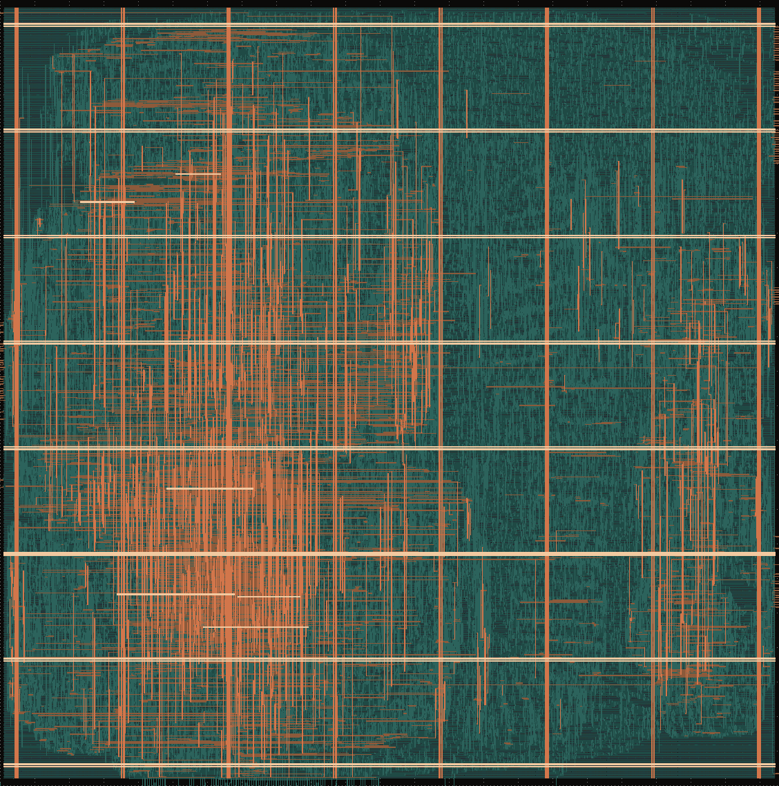
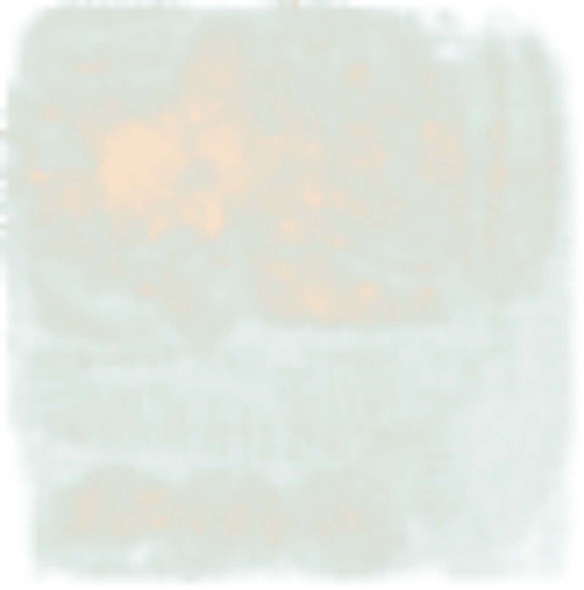
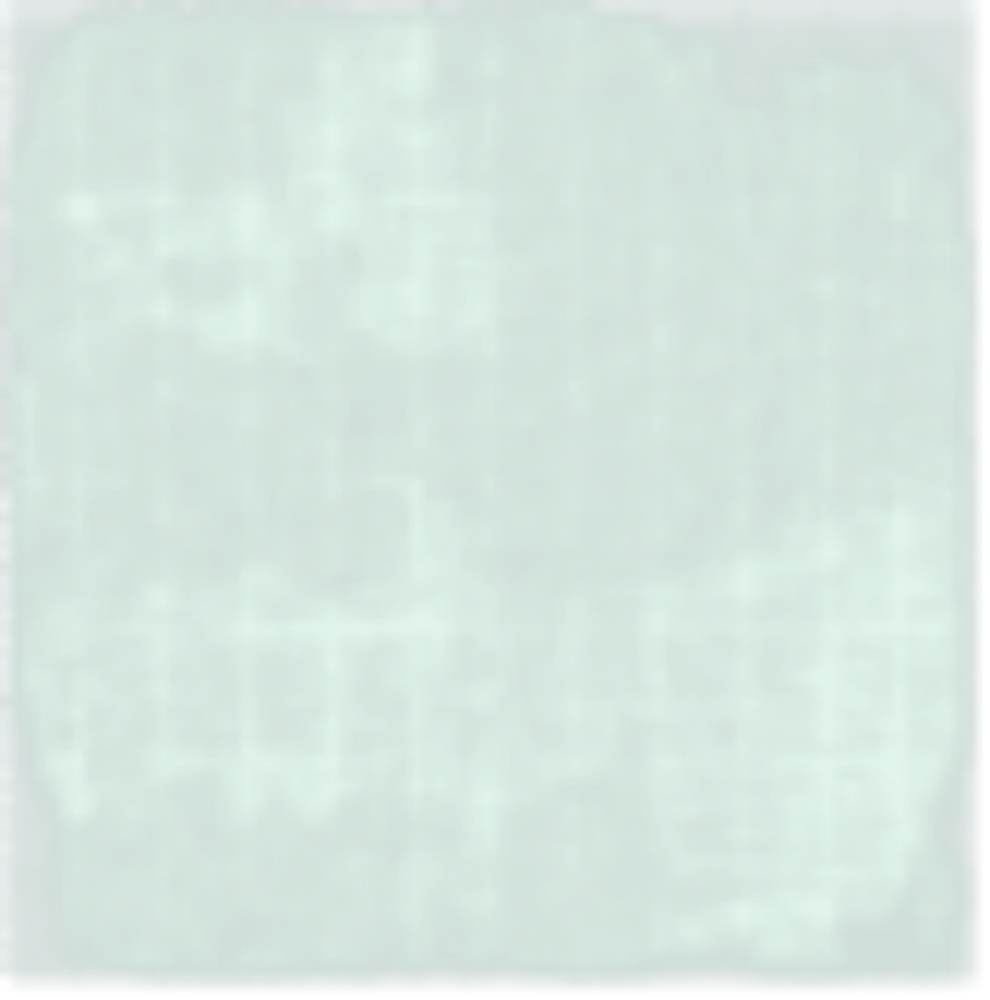
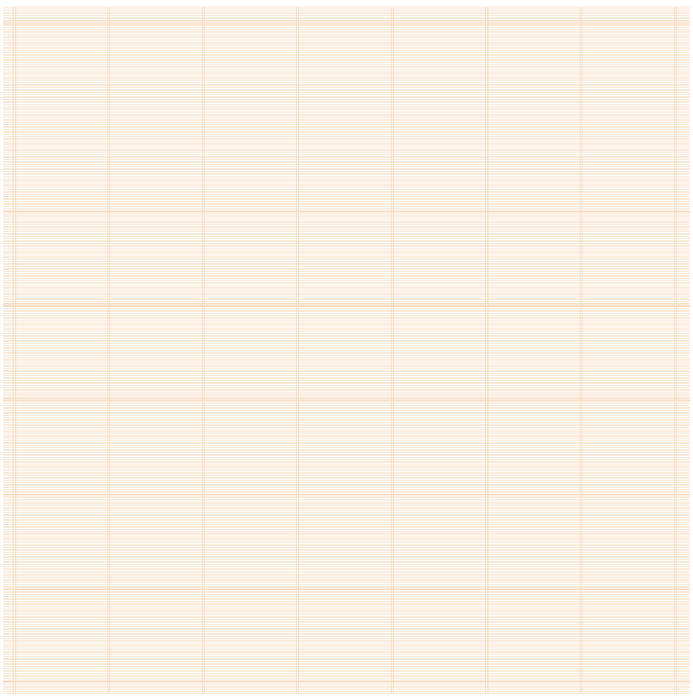
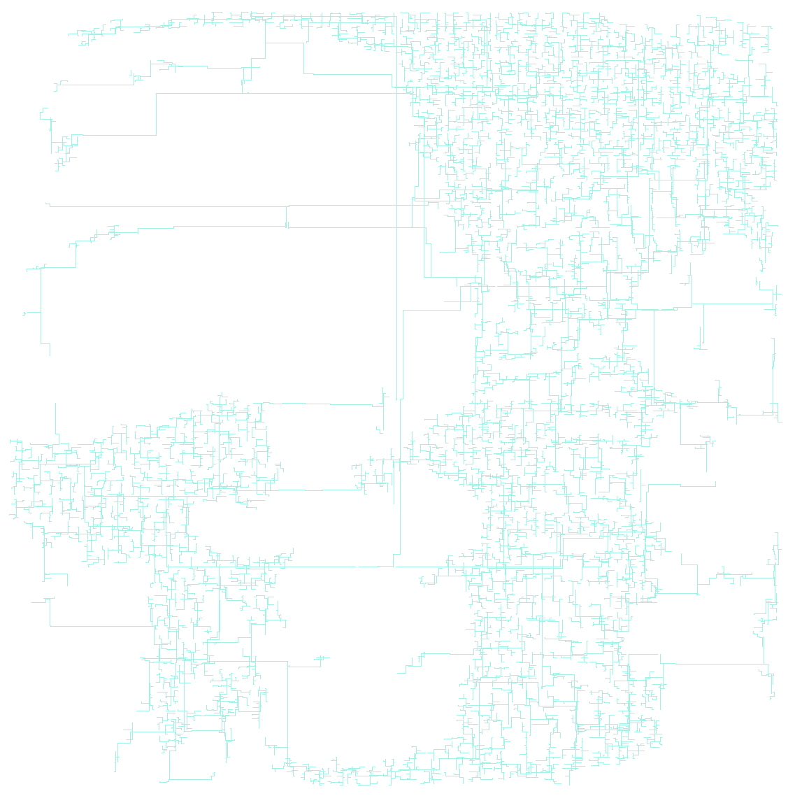
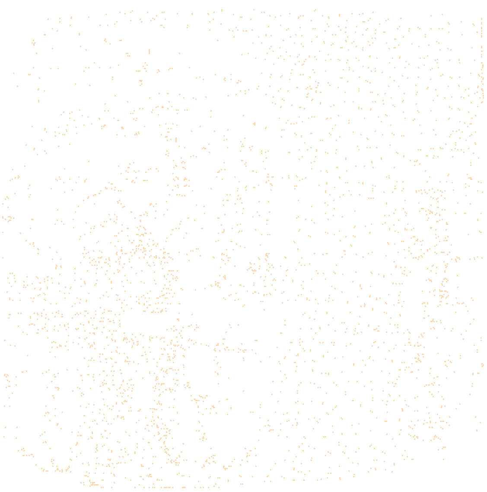
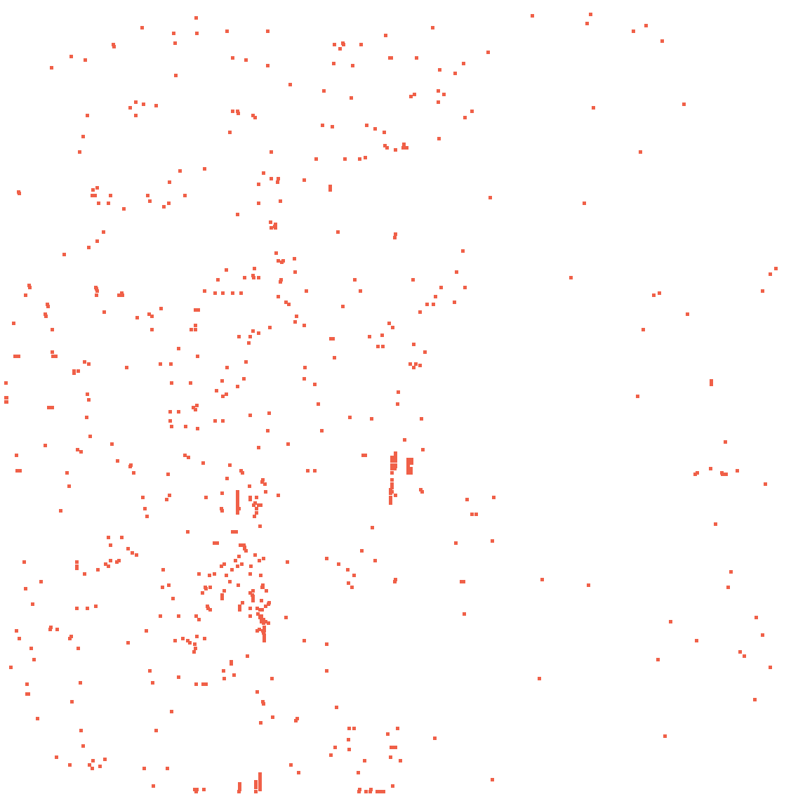
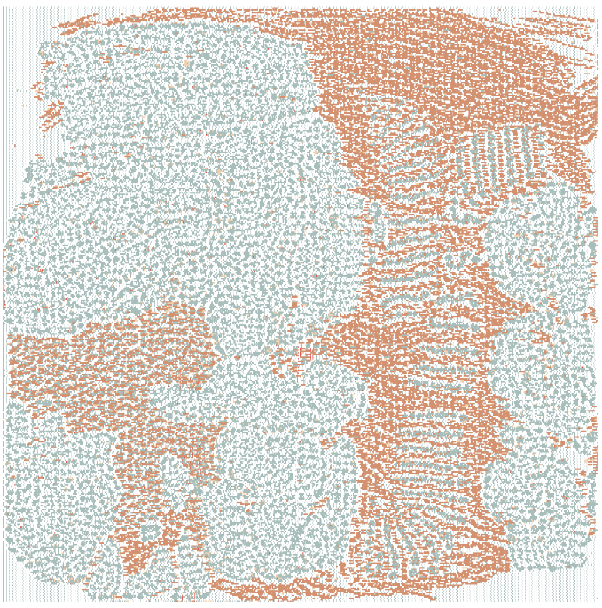
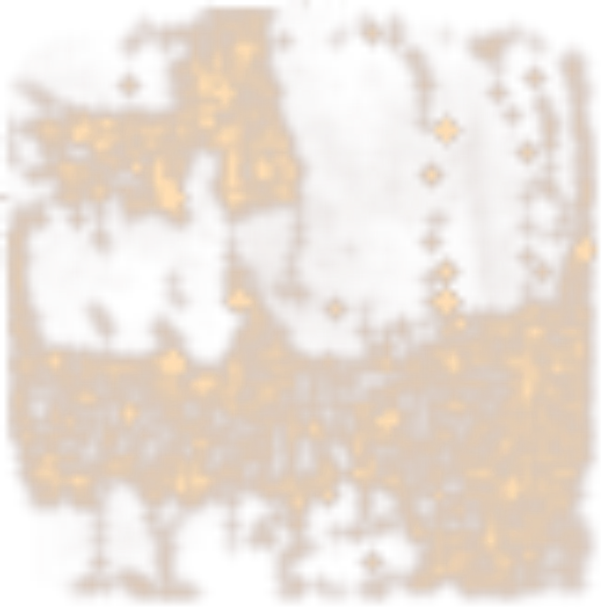
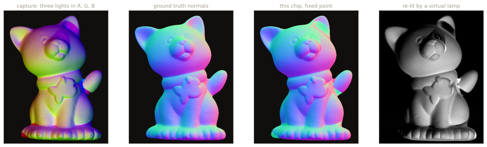

01 — The idea
Photometric stereo without the extra frames
Classic photometric stereo recovers shape from three photographs of the same object under three different lights. Three exposures, three synchronised flashes, and an object that holds still.
ChromaPS puts the three lights in three different colours and takes one exposure. Each pixel's red, green and blue values are three independent measurements of the same surface point, so a fixed 3×3 calibration matrix can untangle them.
The result is the surface normal scaled by its albedo. No frame buffer, no host round-trip: one pixel per clock, fifty clocks of latency, and nothing stored on chip.
02 — Method
Four lines of arithmetic
g = A · m # A = (C · S · L)-1, folded offline
ρ = |g| # albedo
n = g / ρ # unit normal
Iv = max(0, g · lv) # relight, no normalisation
A absorbs the camera's spectral response, the LED spectra and
the light directions, so the same silicon works with any rig that has been
calibrated once — including the redesigned light layout in the test
set. The relighting identity is the useful accident: the dot product with
a virtual light acts on g directly, which is why a re-lit
image costs three multipliers and nothing else.
03 — Datapath
A fifty-cycle pipeline with no memory
The square root and the reciprocal are exact integer operations, which is what makes the verification below meaningful: the RTL and the Python model agree byte for byte, so the numbers come from the hardware, not from a tolerance.
04 — Silicon
What it costs in 130 nm









Hover the die to probe a 14 µm bin — power, routing and cell count under the cursor.
Typical corner closes at 25 ns with 13.6 ns to spare, but the slow corner is what gets signed off, so the headline number is 40 MHz.
The power figure is the static one: every net at the tool's default toggle rate, which is a placeholder, not a measurement. A gate-level run on a real frame gives the activity instead — 58,076 nets, 160 cycles, 283,967 transitions, or 0.031 per net per cycle against the 0.1 that the default assumes. So 0.85 W is a ceiling; a properly annotated number needs pin-level activity, which this open-source flow does not extract.
05 — Verification
Three implementations, one answer
Every case is generated by a ray tracer, scored by an independent fixed-point model, and then run through the RTL. The comparison is a plain byte diff of the five output channels.
| Case | RTL vs model | Confident | Mean err | p95 |
|---|---|---|---|---|
| plate — embossed surface, printed albedo | bit-exact | 100% | 0.31° | 0.67° |
| sphere — ring illumination around the lens | bit-exact | 94% | 0.22° | 0.40° |
| bumps — high-frequency relief | bit-exact | 100% | 0.23° | 0.43° |
| tilted — different calibration matrix | bit-exact | 100% | 0.39° | 0.85° |
| noise — sensor noise added to the capture | bit-exact | 100% | 5.25° | 12.7° |
| dark — 30% exposure | bit-exact | 50% | 0.53° | 0.95° |
| studio — specular, vignette, grain | bit-exact | 99.9% | 1.54° | 3.78° |
| edge — saturation, shadow, zero signal | bit-exact | 0% | — | — |
The angular error is measured against the ray tracer's own normals, which neither the model nor the RTL has seen. The noise row is the honest one: the arithmetic stays bit-exact, but noisy input moves the normals and the confidence channel does not catch it. The tilted row exists to prove that the matrix really is loaded from configuration instead of being baked into the RTL.

06 — Cases
Pick a capture, move the light
07 — Speed
The same frame, five machines
Each row re-lights the same 320×240 surface at its own frame rate. The chip runs nine frames ahead of your screen; Python manages two a second.
| Platform | Live viewport | Frames/s |
|---|---|---|
| ChromaPS~85 MHz, typical corner | 1,107 | |
| ChromaPS40 MHz, signed off | 521 | |
| numpy, this laptopmeasured | 75 | |
| Cortex-M4 @ 168 MHzcycle-budget estimate | 8.7 | |
| scalar Pythonmeasured | 2.3 |
40 Mpixel/s over 76,800-pixel frames is 521 frames per second, so the rotation reads as a strobe, not a turn. 640×480 at 30 fps needs 9.2 Mpixel/s: 4.3× headroom here, about fourteen Cortex-M4s.
08 — Reproduce
Everything runs on a laptop
Icarus Verilog for simulation, LibreLane for the flow, sky130A for the process. No proprietary tools in the loop.
make model # ray tracer -> stimulus, golden model -> expected output make rtl # RTL simulation -> output hex make compare # byte diff, writes the report make test # every case end to end make pnr # LibreLane, RTL to GDSII (~40 min) # your own photograph: one shot under R/G/B LEDs, or three shots python3 model/photo.py --single IMG_0042.jpg --out stim/mine